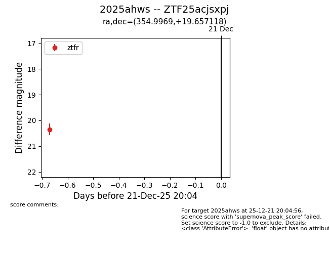
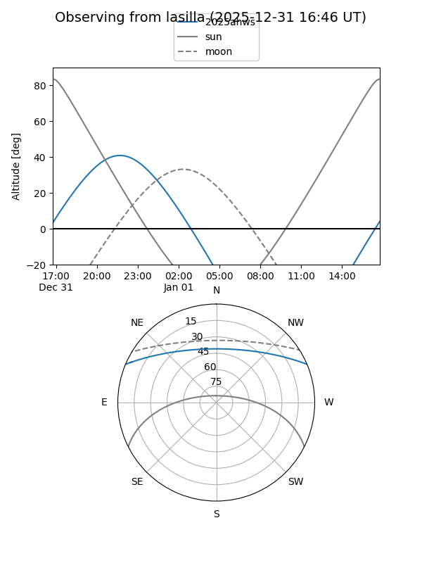
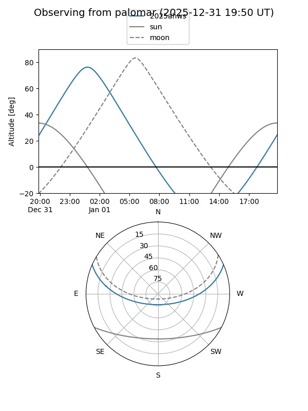

2025ahws
Target 2025ahws at 2026-01-09 12:49
Aliases and brokers:
FINK: link
Lasair: link
ALeRCE: link
TNS: link
YSE: link
alt names
ZTF25acjsxpj (ztf,fink_ztf)
2025ahws (tns,yse)
Coordinates:
equatorial (ra, dec) = 354.9969,+19.65712
equatorial (HMS+DMS) = 23:39:59.26,+19:39:25.62
galactic (l, b) = (100.7395,-40.11558)
Flags:
Photometry:
last ztfr=20.34
1 ztfr detections
Lightcurve

Visibility


Additional plots